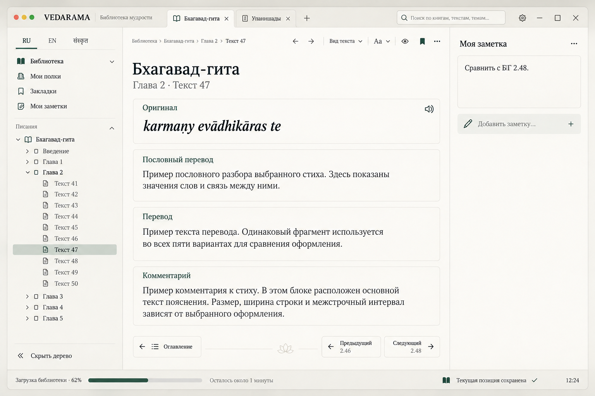
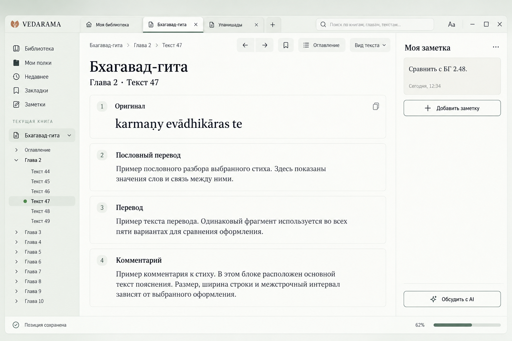
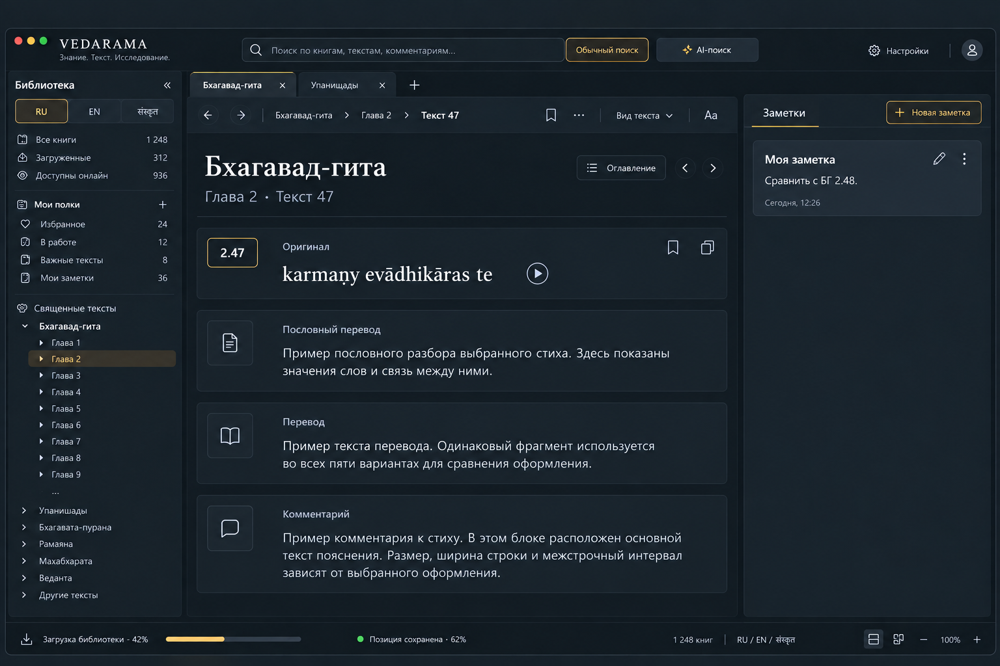
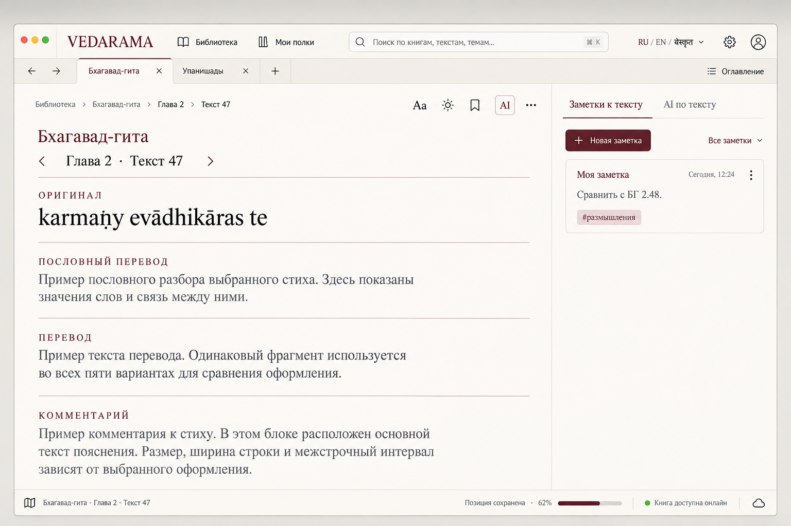
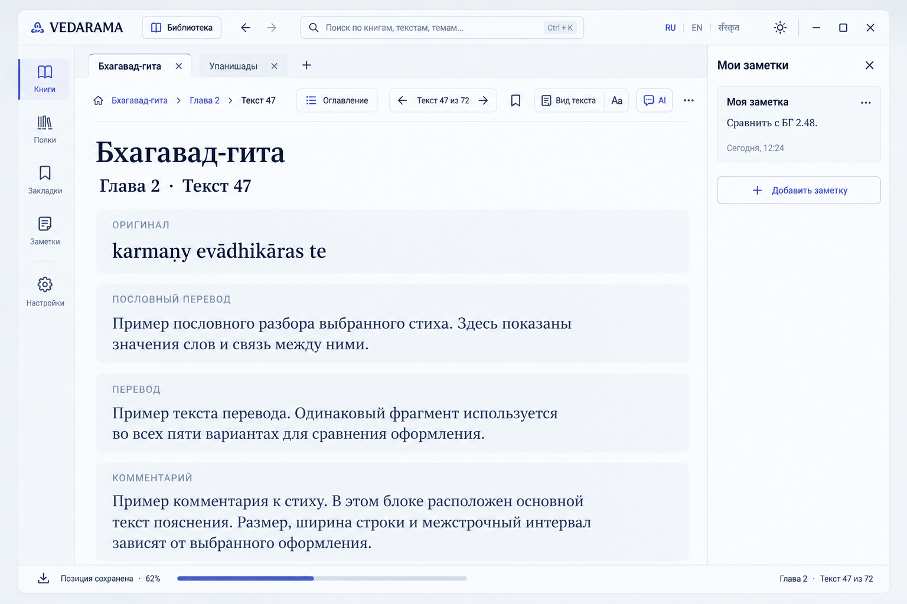
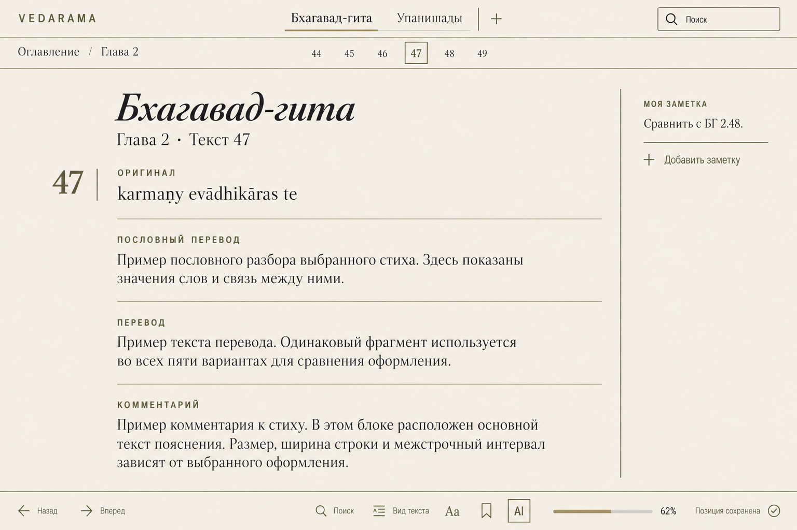
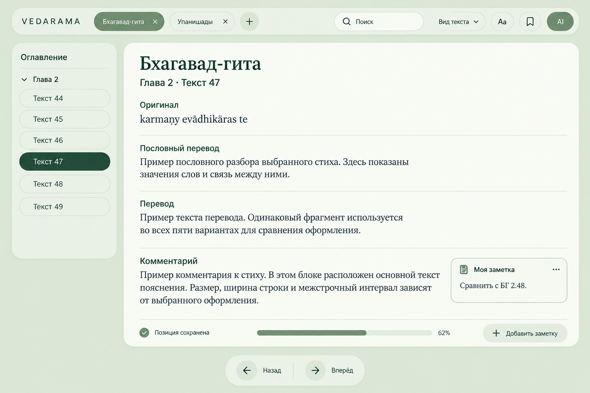
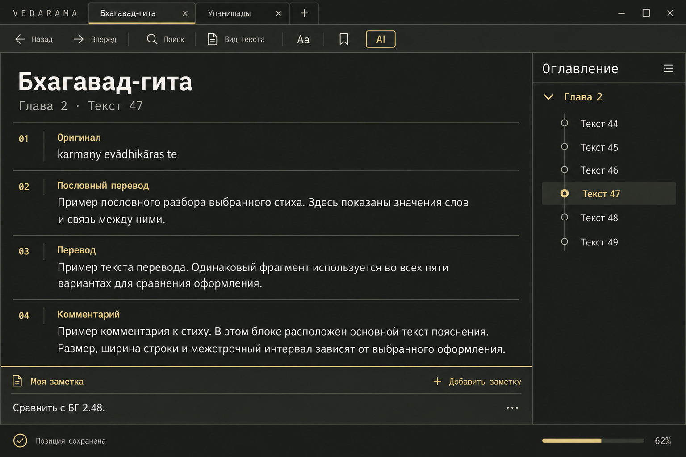
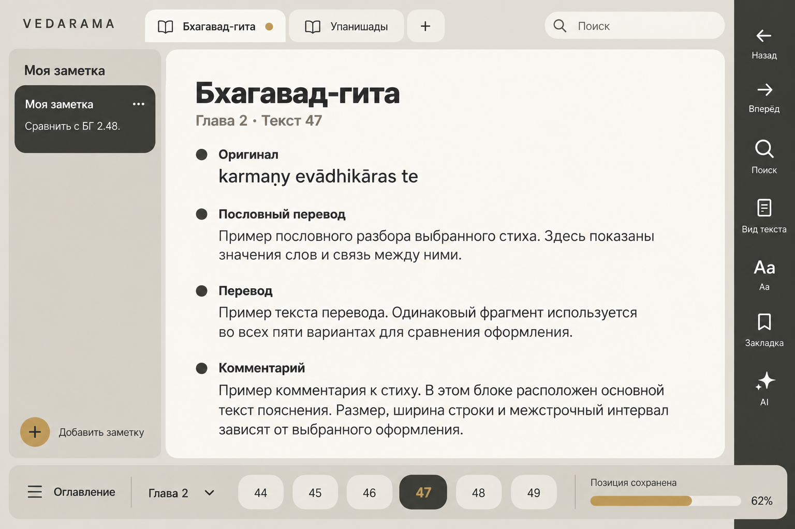

Основной экран чтения: тёплый кремовый фон, зелёные акценты, оглавление и заметки.
Во всех девяти концептах показан основной экран чтения: Бхагавад-гита, глава 2, стих 47, четыре текстовых блока и заметка. Сравнивайте общий подход к интерфейсу: палитру, типографику, расположение блоков и форму элементов.

Основной экран чтения: тёплый кремовый фон, зелёные акценты, оглавление и заметки.

Открытая книга в мягкой минеральной палитре с оглавлением и заметкой.
Основной экран чтения: тёплый кремовый фон, зелёные акценты, оглавление и заметки.
Открыть в полном размере ↗
Основной экран чтения в тёмном исследовательском стиле: компактная навигация, текст и заметки.
Открыть в полном размере ↗Открытая книга в мягкой минеральной палитре с оглавлением и заметкой.
Открыть в полном размере ↗
Основной экран чтения с книжной типографикой, бордовыми акцентами и заметкой на полях.
Открыть в полном размере ↗
Минималистичная читалка с компактной навигацией, четырьмя блоками текста и заметкой.
Открыть в полном размере ↗
Светлая бумага, сдержанные оливково-коричневые акценты и книжная антиква.

Зелёный фон, мягкая типографика, крупные радиусы и плавающие панели.

Тёплый угольный фон, мягкое золото и контрастный светлый текст.

Тёплые каменные оттенки, графит, бронза и асимметричная компоновка основного чтения.